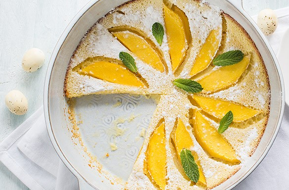

VOORGERECHT
HOOFDGERECHT
Clafoutis met mango
Een heerlijk en fris nagerecht, met overgoten beslag en mango.
ingrediënten:
elrwfnhljrwnqjlfhwlj;cfnwj;ln
- 65 gram bloem
- 200 gr mango in dunne plakjes
- 1 eetlepel citroensap
- 2 eieren
- 50 gr suiker + 1 eetlepel suiker
- 1 zakje vanillesuiker
- 150 ml melk
- Verse muntblaadjes
- 1 eetlepel poedersuiker
Bereidingswijze
- Verwa
rm de oven op 180 graden.
- Doe de bloem, eieren, melk, citroensap, vanillesuiker en 50 gr suiker in een kom en mix door elkaar.
- Vet de ovenschaal in met een beetje boter.
- Bestrooi met de eetlepel suiker. Verdeel ongeveer de helft van de mango over de bodem.
- Giet het beslag over de bodem.
- Verdeel de rest van de mango, eventueel in een mooi patroon, over de bovenzijde. Bak de clafoutis 30 minuten in de oven.
- Bestrooi voor het serveren met poedersuiker en wat verse munt.

Tip Dit nagerecht is heel goed te combineren met ander fris fruit, zoals aardbijen of druiven.